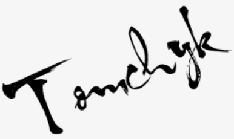

Про додаток

Додаток дає можливість пройти тестування по мові програмування HTML та є лабораторною роботою Томчика Олександра Анатолійовича, студента групи КВ-04 ФПМ КПІ ім.Ігоря Сікорського. Так як сайт є статичним, функціональна реєстрація не можлива, тому щоб продивитись вікна реєстрації та входу потрібно відкривати їх вручну.